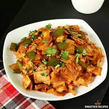

Chilli Parota

Description
Ingrediants
- 3 parotta
- 2 tbsp oil
- ½ tsp fennel / saunf
- few curry leaves
- ½ onion (cubed)
- 1 chilli (slit)
- 1 tsp ginger garlic paste
- ½ capsicum (cubed)
- ¼ tsp kashmiri chilli powder
- ½ tsp garam masala
- ½ tsp coriander powder
- 2 tbsp tomato sauce
- 1 tsp soy sauce
- ¼ tsp salt
- 2 tbsp water
- 2 tbsp coriander (finely chopp
-
Firstly, cut 3 parotta into small pieces. you can use fresh or leftover
parotta. heat 2 tbsp oil and splutter ½ tsp fennel and few curry leaves.
add ½ onion, 1 chilli and 1 tsp ginger garlic paste.
-
saute well until onions shrink slightly. further, add ½ capsicum and
stir fry. also, add ¼ tsp chilli powder, ½ tsp garam masala, ½ tsp
coriander powder.
Main menu